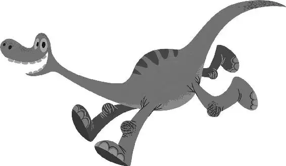

65 million years ago—on a day very much like many before it—all was quiet on Earth as a group of dinosaurs peacefully ate in a lush green field. A big moon cast a gentle glow from above as they lazily chewed on fern fronds, twigs, and leaves.
But in the deepest, darkest depths of outer space—way beyond the dinosaurs—things were not so calm. A giant space rock was hovering millions of miles above the earth, moving more quickly than the others in the asteroid belt. It nudged into a larger rock, sending an even bigger rock on its path. The asteroid began descending toward Earth. It burned as it entered the atmosphere, gaining momentum and on track to smack right into the blue planet. It raced faster and faster, getting closer and closer and closer, until ...
Whooooosh!
The raging fireball darted right past Earth—just missing it.
Down below, the dinosaurs stopped chewing for a brief moment as they watched the bright, silver streak of light shoot across the night sky.
Then they went back to chomping on their leafy greens.
Millions of years later, the world had changed. The Earth and the dinosaurs that roamed it had become very different. Two Apatosauruses were busy cultivating a farm alongside a river at the base of a three-point mountain range called Clawtooth Mountain. Henry and Ida worked hard tending to their fields and produced enough food to get them through every winter. Their farm was flourishing and soon, they’d have a family.
Early one morning, Henry was outside doing his chores, using his mouth and long neck to spray streams of water across the cornfields, when he heard Ida’s voice ring out. “Henry!” called Ida. “It’s time!”
Ida and Henry gazed at the eggs cozily sitting together in their large nest. All three were smooth and white, but one of them was quite a bit larger than the other two. Naturally, they assumed that would be their biggest and strongest. Ida and Henry had been dreaming about the little dinosaurs growing inside those beautiful eggs for so long. It was hard to believe the waiting was about to be over. They watched with hopeful eyes as one of the smaller ones wobbled just a bit. Then it wobbled a bit more. And finally… a tiny crack formed.
Crack!
The shell cracked open and, like a little ray of sunshine, a girl dinosaur cheerfully bounced out. “Our first girl,” said Poppa with a smile. “Let’s call her Libby, after your momma.”
Momma’s eyes welled up with tears of joy as she and Poppa watched Libby smile and then vanish. In a flash, she reappeared, popping out of her hiding place, her long, thin tail whipping behind her. The silly little trickster made Momma and Poppa laugh, disappearing and reemerging from unexpected places.
Then the other small egg began to wobble.
Crack!
A tiny crack appeared at the top of its shell. It wobbled and pushed a bit more until… Pop! A foot came out!
Pop! Pop! Pop!
One by one, three more feet pierced through, sticking straight out. The egg rolled over and its four thick legs stomped around until it bashed into a tree trunk. The shell crumbled away and a tough little male dinosaur—built like a tank—stood and looked at them. Even his head was big for a baby apatosaurus and looked as if it were balancing on top of his long neck.
“Hello, Buck,” Poppa said proudly. The little dinosaur picked up a stick and started beating his father’s leg with it. “He’s got your eyes.”
Finally, the largest egg began to wobble and quiver. Momma and Poppa leaned in, excitedly, waiting to see their third child. “Looks like it’s going to be a big one!” Poppa exclaimed anxiously. The egg wiggled… and wobbled some more. Henry and Ida continued to sit and stare.
Crack!
The egg cracked open and the top popped off. The parents gasped in excitement, but nothing happened. No little dinosaur emerged. They leaned forward, peering in, and curled up inside the bottom of the egg, was the tiniest dinosaur either of them had ever seen!
Poppa pulled off the top half of the shell and the tiny dinosaur peeked out at them timidly.
“Hello, Arlo,” Poppa said, trying to coax the little apatosaurus out of the egg. But Arlo didn’t move. His arms and legs were splayed, gripping the inside of the shell tightly. He was not interested in leaving.
“It’s alright. Come on out,” Poppa encouraged.
Arlo nervously inched forward, and seemed to quiver with fear.
“Look at you,” said Poppa, smiling adoringly.
Then Arlo tipped over and fell flat on his face with his backside sticking straight up in the air. Seeing a golden opportunity, Buck lumbered over and smacked Arlo on the butt with his stick.
“Get out of there! You little prickle bush!” scolded Poppa.
Buck scurried off and ran around with Libby, bouncing and romping about. Arlo watched them for a moment and then tried to join the fun. He was nervous at first; but as he picked up speed, he began to enjoy running with his brother and sister.
Eventually, the three little dinosaurs ran all the way to the door, where the view stopped them in their tracks. Their eyes opened wide as they gazed out at the bright, big world outside.
“That’s our farm,” said Poppa contentedly. “And you’re all gonna help take care of it.”
Libby and Buck already seemed excited by the farm and the possibilities ahead of them. But Arlo was overwhelmed and unsettled by all of its newness and unfamiliarity.
